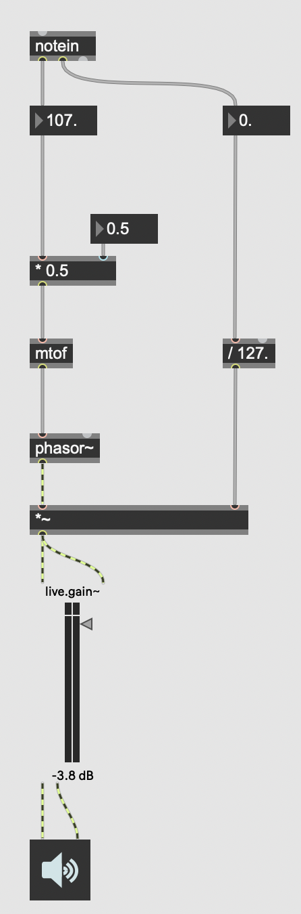
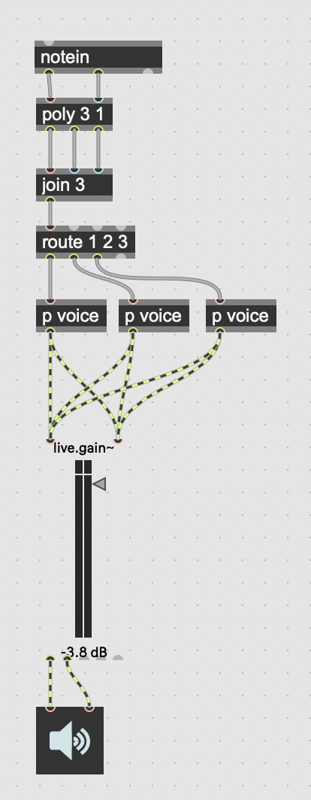
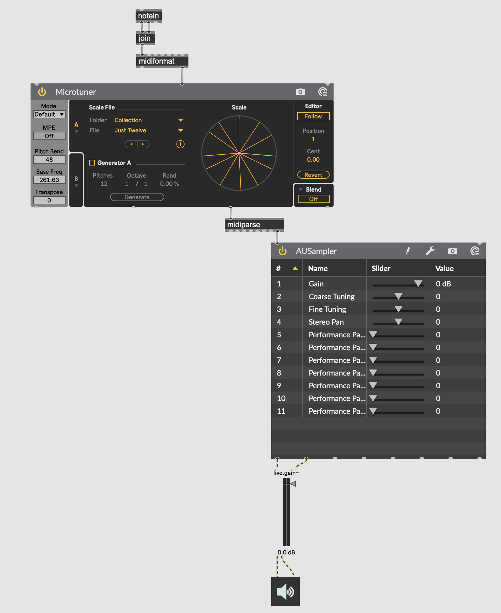

This is a tutorial outline for a tailored introduction to Max session.
Max is a visual programming environment for multimedia. It excels at synthesis, rapid prototyping, interaction design, interactive installation, video and graphics manipulation and performance, generative music creation, digital signals processing, and a lot more. I find I spend much of my time in Max as it is an excellent, and reliable home base for tech-enabled music and interaction applications.
Max is also a great place to learn about visual programming thanks to its polished interface and superb in built documentation system. Learning how to navigate, work, and think within Max, while requiring a moderate learning curve, is a great introduction to programming, both text-based and visual. It is where I began learning to program well over a decade ago.
What I hope to put together here are some Max fundamentals to help you begin working in Max, and to give this some real-world context I am using the creation of a microtonal interface for a standard MIDI keyboard as a demonstration project.
We are going to build something that lets us play microtonally - allowing us to access a smattering of the notes in between the notes of the western equal temperament piano keyboard, starting with 24TET tuning. In its simplest form it will look something like this:

We’ll then use encapsulation to make it polyphonic like so:

Types of objects in Max
- Message boxes
- Objects
- GUI objects
Concepts
- Patch cables
- Bangs
- Right to left ordering
- (Hot and cold) inlets and outlets
- Messages and Attributes
- The Inspector
- The Max Console
- The anatomy of a MIDI note message
- Plundering help patches
- Encapsulation
- Abstraction
- File paths
Data types
- Bang
- Floats
- Ints
- Symbols
- Lists
- Signals
- Multi-channel signals
- Matrices
- Textures
Important (or useful) objects
- trigger
- dac~
- live.gain~
- mtof
- poly
- route
- join and unjoin
- line~
Steps
- The Max interface
- The Max Console
- The Inspector
- Toolbars and shortcuts
- Objects, Message boxes, Patch cables
- Message boxes, and hot and cold inlets
- Accessing help patches
- Receiving MIDI notes
- Creating and outputting signals
- Packing and unpacking lists
- Using poly, route, and encapsulation to implement polyphony
- Accessing and navigating in-built tutorials
Implementing polyphony
In Max, see: Documentation -> MSP -> Polyphony
I you look at the first tutorial in the documentation noted above, you can see they demonstrate the “hard way” to realise polyphony in Max. This is similar to the demo provided above:
The tutorial discuss the cons of this approach, noting the patching complexity and CPU efficiency considerations. The poly~ object comes to the rescue here.
We’re going to start with making our patch polyphonic the “hard way”, and as an extension, you may want to explore using the poly~ object to make your match more efficient - it also helps us handle things like release envelopes more effectively. This approach is, however, more complex, so starting “the hard way” is in some ways easier!

For more complex synthesis, take a look at the MSP -> Tutorials -> Basics page in the Max documentation.
Concepts
- Abstraction vs Encapsulation
- inlets and outlets
- File paths
- Simple project management
- Routing audio between applications
- audio processing with BEAP, M4L, VST, and AU
- send and receives
- ctrlin and mapping
If we were to instead take a short cut to getting just intonation working in Max, we could also use Live 11’s Microtruner device inside Max, routing it to a VST, M4L, or AU device like so:
